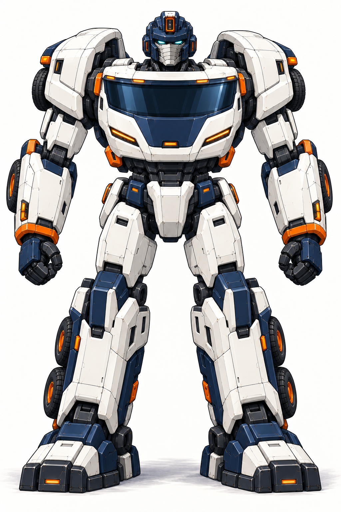
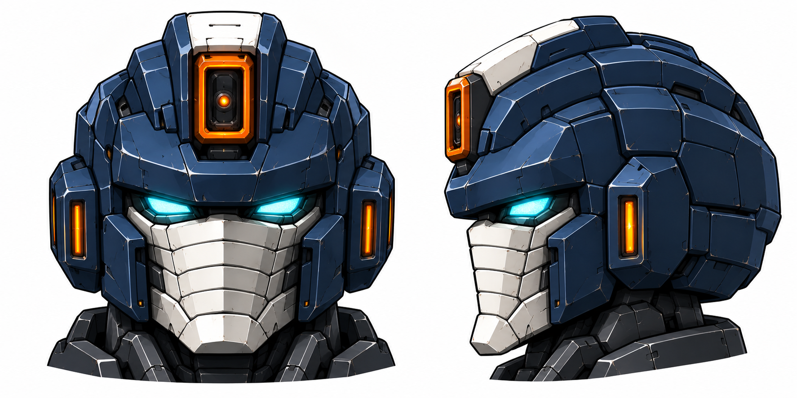

本页为R2历史。头部与车形细节已推进至整体盔型与摄像头后视新稿；R2人形仅作颈下参考，变形关系以新布局研究及其缺口为准。
货柜领袖 · 新稿 R2
流线电驱车形，对应同一台领袖机体
参考 Tesla Semi 的流线驾驶室方向，将大弧面风挡、平滑前罩和包覆侧裙带回人形。保留白甲、藏蓝车架和安全橙；领袖感来自体量与神态，头部取消水平天线。
车形：大弧面风挡与流线前罩
单片风挡、后倾前柱和低位细灯带取代旧方头与大格栅。仍是一副四轴刚性底盘，后方运载一个可卸货柜。


人形：单片胸窗、前罩胸甲与导流肩壳
整片弧面风挡成为上胸，下方对应车头蓝白前罩和细灯组。肩部改为圆弧导流壳，侧裙板对应前臂与长胫甲；八个轮位按原四轴追认。


头部：去掉横向天线，保留自己的识别点
中央橙框摄像头、青色双眼、银色分节面甲与内嵌竖灯通讯块。两侧不再伸出横杆，也不采用高耸双耳尖；额部保持低短摄像头脊。


车形与人形的部件关系
| 部件 | 车形 | 人形 |
|---|---|---|
| 弧面风挡 | 单片曲面前风挡与后倾前柱 | 上胸单片弧面胸窗，不拆成双矩形窗 |
| 流线前罩/灯带 | 蓝白倒梯形前罩、低位细橙灯 | 胸窗下方前罩胸甲/细灯组，旧格栅退出 |
| 驾驶室侧导流壳 | 圆弧驾驶室侧/顶罩 | 后掠圆弧肩甲及上臂覆壳 |
| 包覆侧裙/电池侧盖 | 底盘外侧平滑包覆板 | 前臂与长胫甲导流覆板 |
| 四轴/八轮位 | 驾驶室前后两轴＋货台后双轴 | 每侧肩后1、前臂外后1、小腿外后竖向2 |
| 货台/货柜 | 单副刚性货台＋单个正常体积货柜 | 货台折为浅背架；货柜先卸在地面，完整体积独立保留 |
| 头部 | 收纳结构待同模型细化 | 中央摄像头脊、双眼、分节面甲、内嵌竖灯通讯块；无水平天线 |
本轮先呈现新版车形、人形母稿和头部近景。新机体侧背与连续变形将沿选定造型继续制作，旧R1侧背保留历史。
本轮检查、参考与提示词
- 车头从方正平头/三层大格栅改为大弧面无中分风挡、后倾前柱、平滑蓝白前罩和低位细橙灯带；车侧补包覆式导流/电池侧裙。
- 车形仍为同一四轴刚性底盘，近侧四个轮位可数；单个正常体积货柜通过底部角锁安装，没有增加牵引头挂车或复制货柜。
- 人形胸部使用新版车形的单片弧面深色风挡，下面是倒梯形前罩/细灯组；旧三层柴油格栅已去掉，不是只把旧机体换头。
- 肩部改为后掠圆弧驾驶室侧导流壳，前臂与长胫甲沿车侧包覆板绘制；大腿、膝、胫、踝分开，正常纵向头壳体积保留。
- 新整机与头部近景均没有水平突出杆/横鳍；中央橙框竖向摄像头、分离青色双眼、银色重叠分节面甲与内嵌竖灯通讯块形成当前头脸。
- 与擎天柱的区别落实在无高位双耳尖、无双方窗胸、无红蓝主涂装、中央摄像头和多段面甲；保留货车变形/可靠领袖的文化投射。
- 每侧肩后、前臂外后、小腿外后双轮共四个公路轮位；机器人未背第二货柜，独立货柜先卸下再展开的关系保持。
本轮为新版车形、人形母稿与头部近景3张源设计；新机体侧背尚未绘制，R1旧侧背不再作为R2当前几何。 源稿有绘制板线、灯数和近景投影漂移；不是同一模型严格正交，头部右图为左侧向观察。 驾驶室/底盘分件对应是源设计提案，铰链轨迹、结构净空、连续变形和游戏正常镜头未制作或验证。 用户已授权未来车形、对应人形和取消水平天线方向；本次3张具体新图尚待看稿，未自动视为采用。
三张源稿与检查记录内置生图实际提示词组文件来源核对用户本次要求R1历史图稿Tesla官方车体辨识图
外形参考不迁移品牌、技术参数或剧情能力。当前三张为新源设计，供本轮看稿。